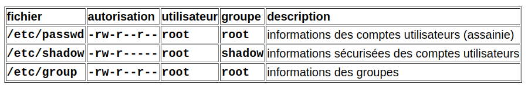
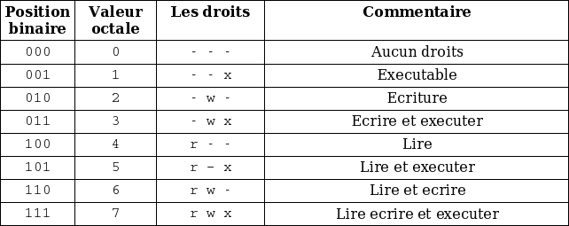

Mémo des commandes fondamentales sur Debian
1. Trouver de l’aide et obtenir de l’information
A) Sur le web à l’aide d’un navigateur
B) Sur le système à l’aide de commandes spécifiques
Obtenir le manuel d’utilisation de la commande ls
Vous pouvez effectuer des recherches dans la page de manuel à l’aide de la touche /. Taper le mot-clé recherché puis sur la touche Entrer.
2. Connexion au système GNU/Linux et utilisation du shell
Le shell est un programme central du système d’exploitation GNU/Linux. C’est un interpréteur de commande qui permet à l’utilisateur de fournir des instructions et des consignes au système. L’utilisateur lance des commandes par l’intermédiaire d’un terminal et le shell les exécute.
Il existe de nombreux shells qui ont le même rôle mais disposant de particularités qui leur sont propres. Par défaut, celui utilisé sur la plupart des distributions se nomme bash (Bourne-Again shell).
Exemple de shells sous GNU/Linux : sh, bash, csh, ksh, zsh.
Première connexion à une session utilisateur à l’aide d’un terminal
| Structure | Description |
|---|---|
| etudiant | nom de l’utilisateur avec lequel nous sommes connectés |
| template-srv | nom de la machine sur laquelle nous sommes connectés |
| :~ | nous sommes placés par défaut dans le répertoire personnel de l’utilisateur etudiant (/home/etudiant) représenté ici par le symbole ~ |
| $ | nous sommes un utilisateur disposant de droits restreints, le symbole # indiquerait que nous serions super-administrateur de la machine |
Savoir quel shell j’utilise
Paramétrer le fonctionnement de son shell utilisateur
3. Utilisation de la commande sudo
Sudo est un outil puissant qui permet de pouvoir améliorer le contrôle et la granularité des privilèges sur le système et les commandes. Toutes les commandes précédées du sudo sont journalisées, ce qui permet une meilleure traçabilité des évènements. Sudo permet également d’éviter la connexion permanente avec le super-administrateur root sur le système afin de limiter les erreurs de manipulations. Enfin, cela permet de ne fournir que les accès nécessaires aux utilisateurs du système.
Exemple : L’administrateur système sénior ne donnera pas l’accès au compte root à l’administrateur système junior. Il lui créera un compte nominatif et lui attribuera uniquement l’accès aux commandes dont il a besoin.
Lors de l’installation d’un système GNU/Linux, il est ainsi vivement recommandé de désactiver le compte root et de créer un utilisateur standard qui pourra utiliser la commande sudo lorsqu’il aura besoin d’accéder à certaines commandes nécessitant les privilèges super-administrateur.
Le mot de passe demandé ici est le mot de passe du compte étudiant. Le paramétrage de l’outil sudo se fait dans le fichier de configuration /etc/sudoers.
Se servir d’un éditeur de texte avec les privilèges root sans compromettre la sécurité
La commande sudoedit sollicite l’éditeur par défaut avec les droits root mais empêche l’utilisation de fonctionnalité dangereuse comme la possibilité de basculer du mode édition vers un shell.
4. Utiliser l’éditeur de texte nano
L’éditeur de texte nano est l’éditeur par défaut du système Debian GNU/Linux. Il est relativement simple à prendre en main par rapport aux éditeurs historiques tels que vi, vim ou emacs.
Éditer un fichier texte
Les raccourcis clavier utilisables à l’intérieur de nano
| Commandes | Effet |
|---|---|
| Ctrl+g | Affiche de l’aide |
| Ctrl+o | Enregistre les modifications réalisées |
| Ctrl+k | Coupe la ligne courante |
| Ctrl+u | Colle le contenu du presse-papier |
| Ctrl+x | Quitter |
| Ctrl+w | Passer en mode recherche |
5. Configuration réseau du système Debian GNU/Linux
Changer le nom de sa machine
Modifier le fichier /etc/host pour faire correspondre l’adresse IPv4 de boucle locale au nouveau nom attribué
etudiant@template-srv:~$ sudo edit /etc/hosts
127.0.0.1 localhost
127.0.1.1 host-sio1.btssio.lan host-sio1
...
Il faut modifier la deuxième ligne commençant par 127.0.1.1 en définissant le nom complet et simple de la machine. Il nous reste à redémarrer la machine pour que ces changements soient pris en compte.
Définir des paramètres réseaux statiques sous Debian
etudiant@host-sio1:~$ sudoedit /etc/network/interfaces
# This file describes the network interfaces available on your>
# and how to activate them. For more information, see interfac>
source /etc/network/interfaces.d/*
# The loopback network interface
auto lo
iface lo inet loopback
# The primary network interface
allow-hotplug enp0s3
auto enp0s3
iface enp0s3 inet static
address 192.168.1.180/24
gateway 192.168.1.254
etudiant@host-sio1:~$ sudo systemctl restart networking
Définir des paramètres réseaux automatiques (DHCP) sous Debian
etudiant@host-sio1:~$ sudoedit /etc/network/interfaces
# This file describes the network interfaces available on your>
# and how to activate them. For more information, see interfac>
source /etc/network/interfaces.d/*
# The loopback network interface
auto lo
iface lo inet loopback
# The primary network interface
allow-hotplug enp0s3
auto enp0s3
iface enp0s3 inet dhcp
Définir le ou les serveurs DNS récursifs utilisés par le système
etudiant@host-sio1:~$ sudoedit /etc/resolv.conf
search btssio.lan
nameserver 192.168.1.254
nameserver 9.9.9.9
Afficher la configuration réseau de sa machine
etudiant@host-sio1:~$ ip addr show
1: lo: <LOOPBACK,UP,LOWER_UP> mtu 65536 qdisc noqueue state UNKNOWN group default qlen 1000
link/loopback 00:00:00:00:00:00 brd 00:00:00:00:00:00
inet 127.0.0.1/8 scope host lo
valid_lft forever preferred_lft forever
inet6 ::1/128 scope host
valid_lft forever preferred_lft forever
2: enp0s3: <BROADCAST,MULTICAST,UP,LOWER_UP> mtu 1500 qdisc pfifo_fast state UP group default qlen 1000
link/ether 08:00:28:f7:76:89 brd ff:ff:ff:ff:ff:ff
inet 192.168.1.181/24 brd 192.168.1.255 scope global enp0s3
valid_lft forever preferred_lft forever
inet6 2a01:e0a:56a:f5e0:a00:27ff:fef6:6586/64 scope global dynamic mngtmpaddr
valid_lft 86066sec preferred_lft 86066sec
inet6 fe80::a00:27ff:fef6:7889/64 scope link
valid_lft forever preferred_lft forever
Afficher sa passerelle par défaut
etudiant@host-sio1:~$ ip route show
default via 192.168.1.254 dev enp0s3 onlink
...
Afficher les serveurs DNS récursifs utilisés
etudiant@host-sio1:~$ cat /etc/resolv.conf
search btssio.lan
nameserver 192.168.1.254
nameserver 9.9.9.9
Afficher le contenu de son cache ARP
etudiant@host-sio1:~$ ip neigh show
192.168.1.254 dev enp0s3 lladdr dc:00:b0:f8:b1:f5 STALE
192.168.1.142 dev enp0s3 lladdr 6b:80:a8:1c:fc:26 DELAY
Vider le contenu de son cache ARP
Vérifier la connectivité réseau (couche 3 du modèle OSI) avec un autre hôte
etudiant@host-sio1:~$ ping 1.1.1.1
PING 1.1.1.1 (1.1.1.1) 56(84) bytes of data.
64 bytes from 1.1.1.1: icmp_seq=1 ttl=57 time=9.33 ms
64 bytes from 1.1.1.1: icmp_seq=2 ttl=57 time=9.90 ms
Utiliser le raccourci clavier Ctrl+C pour arrêter la commande.
Vérifier la route empruntée par un paquet vers un hôte en dehors de son réseau
etudiant@host-sio1:~$ traceroute 1.1.1.1
traceroute to 1.1.1.1 (1.1.1.1), 30 hops max, 60 byte packets
1 * 192.168.1.254 (192.168.1.254) 5.772 ms 5.670 ms
2 194.149.169.77 (194.149.169.77) 9.367 ms 9.122 ms 9.033 ms
3 as12322.frpar1-rt001i.i3d.net (5.200.30.193) 12.418 ms 10.072 ms 9.994 ms
4 prs-b3-link.ip.twelve99.net (62.115.46.68) 9.930 ms 12.027 ms 11.774 ms
5 prs-bb2-link.ip.twelve99.net (62.115.118.62) 11.695 ms 11.530 ms prs-bb1-link.ip.twelve99.net (62.115.118.58) 15.679 ms
6 prs-b1-link.ip.twelve99.net (62.115.125.171) 15.613 ms prs-b1-link.ip.twelve99.net (62.115.125.167) 12.448 ms prs-b1-link.ip.twelve99.net (62.115.125.171) 12.401 ms
7 cloudflare-ic328334-prs-b8.ip.twelve99-cust.net (213.248.73.69) 11.899 ms 11.867 ms 37.552 ms
8 172.71.116.2 (172.71.116.2) 13.504 ms 172.71.128.2 (172.71.128.2) 13.471 ms 172.71.120.2 (172.71.120.2) 15.103 ms
9 one.one.one.one (1.1.1.1) 10.932 ms 11.291 ms 10.878 ms
Afficher les connexions réseaux IPv4 à ma machine
etudiant@host-sio1:~$ ss -4
Netid State Recv-Q Send-Q Local Address:Port Peer Address:Port Process
tcp ESTAB 0 0 192.168.1.181:ssh 192.168.1.142:35858
Vérifier la bonne résolution entre un nom de domaine et une adresse IP
etudiant@host-sio1:~$ host www.debian.org
www.debian.org has address 130.89.148.77
www.debian.org has IPv6 address 2001:67c:2564:a119::77
etudiant@host-sio1:~$ dig www.debian.org
; <<>> DiG 9.16.27-Debian <<>> www.debian.org
;; global options: +cmd
;; Got answer:
;; ->>HEADER<<- opcode: QUERY, status: NOERROR, id: 31008
;; flags: qr rd ra; QUERY: 1, ANSWER: 1, AUTHORITY: 0, ADDITIONAL: 1
;; OPT PSEUDOSECTION:
; EDNS: version: 0, flags:; udp: 4096
;; QUESTION SECTION:
;www.debian.org. IN A
;; ANSWER SECTION:
www.debian.org. 234 IN A 130.89.148.77
;; Query time: 4 msec
;; SERVER: 192.168.1.254#53(192.168.1.254)
;; WHEN: Mon Oct 24 14:04:00 CEST 2022
;; MSG SIZE rcvd: 59
Vérifier le bon fonctionnement de la résolution inverse (obtenir un nom de domaine à partir d’une adresse IP)
etudiant@host-sio1:~$ dig -x 130.89.148.77
; <<>> DiG 9.16.27-Debian <<>> -x 130.89.148.77
;; global options: +cmd
;; Got answer:
;; ->>HEADER<<- opcode: QUERY, status: NOERROR, id: 61779
;; flags: qr rd ra; QUERY: 1, ANSWER: 1, AUTHORITY: 0, ADDITIONAL: 1
;; OPT PSEUDOSECTION:
; EDNS: version: 0, flags:; udp: 1472
;; QUESTION SECTION:
;77.148.89.130.in-addr.arpa. IN PTR
;; ANSWER SECTION:
77.148.89.130.in-addr.arpa. 600 IN PTR www.debian.org.
;; Query time: 56 msec
;; SERVER: 192.168.1.254#53(192.168.1.254)
;; WHEN: Mon Oct 24 14:05:16 CEST 2022
;; MSG SIZE rcvd: 9
Réaliser une capture de trames en ligne de commande sur l’interface réseau enp0s3
etudiant@host-sio1:~$ sudo tcpdump -i enp0s3
tcpdump: verbose output suppressed, use -v[v]... for full protocol decode
listening on enp0s3, link-type EN10MB (Ethernet), snapshot length 262144 bytes
14:07:07.829804 IP 192.168.1.181.ssh > 192.168.1.142.35858: Flags [P.], seq 1417056190:1417056298, ack 3067159545, win 501, options [nop,nop,TS val 4121313714 ecr 2417072289], length 108
...
Réaliser une capture de trames en ne filtrant que les connexions concernant l’hôte 9.9.9.9 et le port 53 qui sera enregistée dans un fichier .pcap
Obtenir des informations concernant le propriétaire d’une adresse IP publique ou d’un nom de domaine
etudiant@host-sio1:~$ whois sioplc.fr
%%
%% This is the AFNIC Whois server.
%%
%% complete date format: YYYY-MM-DDThh:mm:ssZ
%%
%% Rights restricted by copyright.
%% See https://www.afnic.fr/en/domain-names-and-support/everything-there-is-to-know-about-domain-names/find-a-domain-name-or-a-holder-using-whois/
%%
%% Use '-h' option to obtain more information about this service.
%%
domain: sioplc.fr
status: ACTIVE
eppstatus: active
hold: NO
holder-c: ANO00-FRNIC
admin-c: ANO00-FRNIC
tech-c: OVH5-FRNIC
registrar: OVH
Expiry Date: 2023-06-12T19:40:39Z
created: 2021-06-12T19:40:39Z
last-update: 2022-06-12T20:36:09Z
source: FRNIC
nserver: dns15.ovh.net
nserver: ns15.ovh.net
source: FRNIC
key1-tag: 31114
key1-algo: 8 [RSASHA256]
key1-dgst-t: 8 [SHA256]
key1-dgst: 209B7D947C4944389C4B0160C9FCF7587B1AAEFBD88EB32C7098EF0511017A13
source: FRNIC
registrar: OVH
address: 2 Rue Kellermann
address: 59100 ROUBAIX
country: FR
phone: +33.899701761
fax-no: +33.320200958
e-mail: support@ovh.net
website: http://www.ovh.com
anonymous: No
registered: 1999-10-18T00:00:00Z
source: FRNIC
nic-hdl: OVH5-FRNIC
type: ORGANIZATION
contact: OVH NET
address: OVH
address: 140, quai du Sartel
address: 59100 Roubaix
country: FR
phone: +33.899701761
e-mail: tech@ovh.net
registrar: OVH
changed: 2022-10-24T12:03:51.328503Z
anonymous: NO
obsoleted: NO
eppstatus: associated
eppstatus: active
eligstatus: not identified
reachstatus: not identified
source: FRNIC
nic-hdl: ANO00-FRNIC
type: PERSON
contact: Ano Nymous
registrar: OVH
anonymous: YES
remarks: -------------- WARNING --------------
remarks: While the registrar knows him/her,
remarks: this person chose to restrict access
remarks: to his/her personal data. So PLEASE,
remarks: don't send emails to Ano Nymous. This
remarks: address is bogus and there is no hope
remarks: of a reply.
remarks: -------------- WARNING --------------
obsoleted: NO
eppstatus: associated
eppstatus: active
eligstatus: not identified
reachstatus: not identified
source: FRNIC
nic-hdl: ANO00-FRNIC
type: PERSON
contact: Ano Nymous
registrar: OVH
anonymous: YES
remarks: -------------- WARNING --------------
remarks: While the registrar knows him/her,
remarks: this person chose to restrict access
remarks: to his/her personal data. So PLEASE,
remarks: don't send emails to Ano Nymous. This
remarks: address is bogus and there is no hope
remarks: of a reply.
remarks: -------------- WARNING --------------
obsoleted: NO
eppstatus: associated
eppstatus: active
eligstatus: not identified
reachstatus: not identified
source: FRNIC
>>> WHOIS request date: 2022-10-24T12:12:45.706774Z <<<
etudiant@host-sio1:~$ whois 101.2.172.100
% [whois.apnic.net]
% Whois data copyright terms http://www.apnic.net/db/dbcopyright.html
% Information related to '101.2.172.0 - 101.2.175.255'
% Abuse contact for '101.2.172.0 - 101.2.175.255' is 'anti-spam@chinatelecom.cn'
inetnum: 101.2.172.0 - 101.2.175.255
netname: CHINANET-FJ
descr: CHINANET FUJIAN PROVINCE NETWORK
descr: China Telecom
descr: No.31,jingrong street
descr: Beijing 100032
country: CN
admin-c: CA67-AP
tech-c: CA67-AP
abuse-c: AC1573-AP
status: ALLOCATED PORTABLE
remarks: service provider
notify: fjnic@fjdcb.fz.fj.cn
mnt-by: APNIC-HM
mnt-lower: MAINT-CHINANET-FJ
mnt-irt: IRT-CHINANET-CN
last-modified: 2021-06-15T08:06:37Z
source: APNIC
irt: IRT-CHINANET-CN
address: No.31 ,jingrong street,beijing
address: 100032
e-mail: anti-spam@chinatelecom.cn
abuse-mailbox: anti-spam@chinatelecom.cn
admin-c: CH93-AP
tech-c: CH93-AP
auth: # Filtered
remarks: anti-spam@chinatelecom.cn was validated on 2022-02-14
mnt-by: MAINT-CHINANET
last-modified: 2022-02-14T07:13:12Z
source: APNIC
role: ABUSE CHINANETCN
address: No.31 ,jingrong street,beijing
address: 100032
country: ZZ
phone: +000000000
e-mail: anti-spam@chinatelecom.cn
admin-c: CH93-AP
tech-c: CH93-AP
nic-hdl: AC1573-AP
remarks: Generated from irt object IRT-CHINANET-CN
remarks: anti-spam@chinatelecom.cn was validated on 2022-02-14
abuse-mailbox: anti-spam@chinatelecom.cn
mnt-by: APNIC-ABUSE
last-modified: 2022-02-14T07:14:09Z
source: APNIC
role: CHINANETFJ IP ADMIN
address: 7,East Street,Fuzhou,Fujian,PRC
country: CN
phone: +86-591-83309761
fax-no: +86-591-83371954
e-mail: fjnic@fjdcb.fz.fj.cn
remarks: send spam reports and abuse reports
remarks: to abuse@fjdcb.fz.fj.cn
remarks: Please include detailed information and
remarks: times in UTC
admin-c: FH71-AP
tech-c: FH71-AP
nic-hdl: CA67-AP
remarks: www.fjtelecom.com
notify: fjnic@fjdcb.fz.fj.cn
mnt-by: MAINT-CHINANET-FJ
last-modified: 2011-12-06T00:10:50Z
source: APNIC
% This query was served by the APNIC Whois Service version 1.88.16 (WHOIS-UK4)
Pouvoir monitorer les connexions réseaux vers ou depuis l’hôte
Connexion ssh à un hôte sur le réseau
Réaliser une découverte d’hôtes sur un réseau à l’aide d’ICMP écho
etudiant@host-sio1:~$ nmap -sP 192.168.1.0/24
Starting Nmap 7.80 ( https://nmap.org ) at 2022-10-25 01:01 CEST
Nmap scan report for 192.168.1.169
Host is up (0.011s latency).
Nmap scan report for 192.168.1.181
Host is up (0.00026s latency).
Nmap scan report for 192.168.1.254
Host is up (0.0085s latency).
Nmap done: 256 IP addresses (3 hosts up) scanned in 6.95 second
Réaliser un scan de port TCP sur un hôte préciser
etudiant@host-sio1:~$ sudo nmap -sS 192.168.1.250
Starting Nmap 7.80 ( https://nmap.org ) at 2022-10-25 01:03 CEST
Nmap scan report for 192.168.1.250
Host is up (0.0073s latency).
Not shown: 992 filtered ports
PORT STATE SERVICE
22/tcp open ssh
88/tcp closed kerberos-sec
139/tcp open netbios-ssn
445/tcp open microsoft-ds
873/tcp open rsync
8080/tcp open http-proxy
8443/tcp open https-alt
9999/tcp open abyss
MAC Address: 24:5F:FC:89:6B:AF (Synology Computer)
Nmap done: 1 IP address (1 host up) scanned in 4.55 seconds
Réaliser un scan de port UDP sur un hôte précis
Réaliser un scan pour déterminer la version d’un service réseau
Réaliser un scan permettant de détecter le système d’exploitation de l’hôte
6. Gestion des logiciels (paquets) et des mises à jour
Debian dispose d’un système de gestion des logiciels appelés paquet (.deb) et de mises à jour centralisé. Pour cela, on va se servir du système APT (Advanced Package Tool) et de serveurs appelés miroirs.
Cela rappelle le principe de l’App Store chez Apple ou de Google Play sur Android sauf que ce système existe depuis le milieu des années 90. Il permet de gérer automatiquement la question des dépendances entre librairies et logiciels ainsi que les mises à jour en passant en général par des miroirs officiels qui ont signé numériquement les paquets fournis.
Éditer la liste des serveurs miroirs utilisés par le système
Rafraîchir la liste des miroirs utilisés (à réaliser régulièrement)
Mettre à jour le système
Installer un logiciel (ici le logiciel iptraf)
Rechercher une chaîne de caractères (ici wireshark) dans la liste des paquets disponibles (préférence pour la commande aptitude dans ce contexte)
etudiant@host-sio1:~$ apt search wireshark
En train de trier... Fait
Recherche en texte intégral... Fait
etherpuppet/stable 0.3-4 amd64
create a virtual interface from a remote Ethernet interface
forensics-extra-gui/stable 2.29 all
Forensics Environment - extra GUI components (metapackage)
…
etudiant@host-sio1:~$ aptitude search wireshark
p libvirt-wireshark - Wireshark dissector for the libvirt protocol
p libwireshark-data - network packet dissection library -- data files
Supprimer un paquet présent sur le système
Nettoyer le système
7. Gestion des utilisateurs
Liste des principaux fichiers de configuration des utilisateurs et groupes

Structure d’une ligne du fichier /etc/passwd

Types d’utilisateurs présents sur le système
Le super-administrateur nommé root qui dispose de l’uid et du gid 0 et qui dispose de tous les droits sur la machine.
Les utilisateurs standards tels que etudiant qui dispose sous Debian d’un uid et gid ≥= à 1000. Ils possèdent un répertoire personnel dans /home et d’un shell afin de pouvoir disposer d’une session sur le système.
Les utilisateurs spéciaux tels que sshd ou nobody qui sont utilisés par des services (daemon) sur le système pour réaliser certaines opérations particulières. Ces comptes sont très limités puisqu’ils ne peuvent pas utiliser d’interpréteur ni ouvrir une session sur le système.
Ajouter un nouvel utilisateur
Supprimer un utilisateur
Modifier le mot de passe d’un utilisateur existant
Ajouter alice au groupe sio1
8. Gestion de l’arborescence et des fichiers
Lister le contenu d’un répertoire
Lister le contenu d’un répertoire en affichant les fichiers cachés (-a) et les propriétés avancées de chaque élément (-l)
etudiant@template-srv:~$ ls -al
total 32
drwxr-xr-x 4 etudiant etudiant 4096 24 oct. 12:05 .
drwxr-xr-x 3 root root 4096 19 avril 2022 ..
-rw------- 1 etudiant etudiant 333 25 avril 12:06 .bash_history
-rw-r--r-- 1 etudiant etudiant 220 19 avril 2022 .bash_logout
-rw-r--r-- 1 etudiant etudiant 3526 19 avril 2022 .bashrc
drwxr-xr-x 3 etudiant etudiant 4096 25 avril 12:05 .local
-rw-r--r-- 1 etudiant etudiant 807 19 avril 2022 .profile
drwxr-xr-x 2 etudiant etudiant 4096 24 oct. 12:05 sio1
-rw-r--r-- 1 etudiant etudiant 0 24 oct. 12:05 test.txt
Tous les fichiers ou dossiers cachés sous GNU/Linux commencent par un . (ex : .bash_history).
Explication détaillée du contenu affiché avec la précédente commandes
| Structure | Explication |
|---|---|
| d | Type de fichier (d = dossier, - = fichier, l = lien symbolique) |
| rwx | Droits de lecture, écriture, exécution pour le propriétaire du fichier (ici etudiant) |
| r-x | Droits de lecture et exécution pour le groupe d’appartenance du fichier (ici étudiant) |
| r-x | Droits de lecture et exécution pour tous les autres utilisateurs du système |
| 2 | Numéro du fichier indexé par le système d’exploitation |
| etudiant:etudiant | Propriétaire et groupe d’appartenance du fichier |
| 4096 | Taille du fichier exprimé en octets |
| 24 oct. 12:05 | Date de création du fichier |
| sio1 | Nom du fichier |
Différence entre chemin relatif et absolu
Le chemin relatif se base sur le répertoire dans lequel vous êtes déjà et ne part pas de la racine de l’arborescence système (/).
etudiant@template-srv:~$ pwd
/home/etudiant
etudiant@template-srv:~$ cd sio1
etudiant@template-srv:~/sio1$
Dans cet exemple, je suis dans le répertoire /home/etudiant et je souhaite me déplacer dans le sous-répertoire sio1. Je tape donc la commande cd sio1.
Le chemin absolu est le chemin complet vers un fichier ou un dossier en partant de la racine du système d’exploitation à savoir /.
etudiant@template-srv:~$ pwd
/home/etudiant
etudiant@template-srv:~$ cd /etc/ssh
etudiant@template-srv:/etc/ssh$
Dans l’exemple précédent, je suis dans le répertoire /home/etudiant et je souhaite me déplacer dans le répertoire /etc/ssh. J’indique que je souhaite partir de la racine pour aller dans le répertoire /etc puis dans le sous-répertoire /etc/ssh.
L’utilisation du chemin absolu évite les erreurs surtout lorsque l’on est débutant.
Savoir dans quel répertoire je me situe
Se déplacer dans l’arborescence et changer de répertoire
Se déplacer pour retourner dans son répertoire personnel
Revenir dans le répertoire parent
Création d’un dossier ou répertoire
Création d’un fichier vide ou mise à jour de son horodatage
etudiant@template-srv:~$ touch /home/etudiant/test2.txt
etudiant@template-srv:~$ ls
sio1 sisr test2.txt test.txt
Copier un fichier
etudiant@template-srv:~$ cp test.txt test3.txt
etudiant@template-srv:~$ ls
sio1 sisr test2.txt test3.txt test.txt
Copier un répertoire avec tout ce qu’il contient
etudiant@template-srv:~$ cp -r sisr slam
etudiant@template-srv:~$ ls
sio1 sisr slam test2.txt test3.txt test.txt
Déplacer ou renommer un fichier
etudiant@template-srv:~$ mv test3.txt test4.txt
etudiant@template-srv:~$ ls
sio1 sisr slam test2.txt test4.txt test.txt
Afficher le contenu d’un fichier
etudiant@template-srv:~$ cat /etc/hosts
127.0.0.1 localhost
127.0.1.1 template-srv.armatis.demouliere.eu template-srv
Afficher le contenu d’un long fichier progressivement
etudiant@template-srv:~$ more /etc/ssh/sshd_config
# $OpenBSD: sshd_config,v 1.103 2018/04/09 20:41:22 tj Exp $
# This is the sshd server system-wide configuration file. See
# sshd_config(5) for more information.
….
Déplacement dans le fichier ligne par ligne à l’aide de la touche Entrée ou par bloc à l’aide de la touche Espace.
Afficher les 10 dernières lignes d’un fichier
etudiant@template-srv:~$ tail /etc/ssh/sshd_config
# override default of no subsystems
Subsystem sftp /usr/lib/openssh/sftp-server
# Example of overriding settings on a per-user basis
#Match User anoncvs
# X11Forwarding no
# AllowTcpForwarding no
# PermitTTY no
# ForceCommand cvs server
Afficher les 10 dernières lignes d’un fichier et les nouvelles lignes qui s’y ajoutent en temps réel
root@template-srv:/home/etudiant# tail -f /var/log/auth.log
Oct 24 12:04:08 template-srv systemd: pam_unix(systemd-user:session): session opened for user etudiant(uid=1000) by (uid=0)
Oct 24 12:04:31 template-srv sshd[453]: Accepted password for etudiant from 192.168.1.142 port 60262 ssh2
….
Pour terminer la commande tail -f et revenir au shell, il faut utiliser le raccourci clavier Ctrl+C (permet d’arrêter un processus en cours).
9. Gestion des permissions et des habilitations sur les fichiers
Changer le propriétaire et le groupe d’appartenance d’un fichier
Désormais, le propriétaire du fichier test.txt est l’utilisateur prof et le groupe d’appartenance admin.
Changer le propriétaire et le groupe d’appartenance sur un répertoire et tous les fichiers qu’il contient
Changer les permissions sur un fichier
Le changement des permissions peut se faire par l’intermédiaire de la méthode octale ou la méthode symbolique.

# u=propriétaire, g=groupe, o=les autres, a= tous, + pour ajouter un droit et – pour retirer un droit. chmod [ugoa][+-][rwx]
Les deux commandes ci-dessus font la même chose. Elles permettent d’attribuer les droits de lecture/écriture au propriétaire de test2.txt, le droit de lecture au groupe d’appartenance et aucun droit aux autres utilisateurs du système.
Vous pouvez choisir la méthode qui vous convient le mieux.
10. Gestion des processus
Afficher la liste des processus présents sur le système d’exploitation
Afficher tous les processus en cours de fonctionnement
Tuer un processus à l’aide son identifiant unique nommé PID
11. Effectuer des recherches sur le système
Déterminer le type d’un fichier
Savoir où est installée précisément une commande sur le système
Qu’est-ce que la variable d’environnement PATH ? (valable sur Windows également)
Vous pouvez taper directement un certain nombre de commandes directement dans votre terminal sans avoir à préciser leur chemin absolu. Cela est possible grâce à la variable d’environnement PATH qui indique tous les répertoires où sont stockées les principales commandes système. Il est possible de modifier cette variable d’environnement afin d’utiliser de nouveaux exécutables sans à préciser leur chemin absolu (soit en ajoutant cette variable dans le fichier .bashrc propre à l’utilisateur ou le fichier /etc/environment qui s’appliquera à tous les utilisateurs du système).
Rechercher tous les fichiers qui commencent par « tes » dans le répertoire /home/etudiant
etudiant@host-sio1:~$ find /home/etudiant -name "tes*"
/home/etudiant/test2.txt
/home/etudiant/test.txt
/home/etudiant/test4.txt
/home/etudiant/test.pcap
Rechercher tous les fichiers disposant de la suite de caractères slam
Les commandes locate et find sont relativement similaires. Locate est simple et facile à utiliser. Find est une commande très puissante que l’on peut coupler à d’autres commandes pour réaliser des tâches complexes sur le système.
Rechercher une chaîne de caractères dans un fichier et affiche la ou les lignes concernées
12. Informations système
Afficher la date et l’heure du système
Afficher la durée d’activité du système depuis son dernier démarrage
Qui est connecté sur le système ?
etudiant@host-sio1:~$ who
etudiant tty1 2022-10-24 13:36
etudiant pts/0 2022-10-24 15:20 (192.168.1.142)
Qui suis-je sur le système ?
Afficher les informations concernant un utilisateur
etudiant@host-sio1:~$ finger prof
Login: prof Name: Prof
Directory: /home/prof Shell: /bin/bash
Never logged in.
No mail.
No Plan.
Afficher les informations à propos du noyau système
etudiant@host-sio1:~$ uname -a
Linux host-sio1 5.10.0-13-amd64 #1 SMP Debian 5.10.106-1 (2022-03-17) x86_64 GNU/Linux
Afficher les informations à propos du CPU
Afficher les informations à propos de la mémoire
Afficher l’espace disque
etudiant@host-sio1:~$ df -h
Sys. de fichiers Taille Utilisé Dispo Uti% Monté sur
udev 976M 0 976M 0% /dev
tmpfs 199M 516K 198M 1% /run
/dev/sda1 6,9G 1,2G 5,3G 19% /
tmpfs 992M 0 992M 0% /dev/shm
tmpfs 5,0M 0 5,0M 0% /run/lock
tmpfs 199M 0 199M 0% /run/user/1000
Afficher la taille d’un répertoire
Afficher la mémoire vive et swap disponible
13. Gestion des services et des daemons
Debian GNU/Linux dispose d’un programme particulier systemd (qui dispose du PID 1) dont le rôle est la gestion des processus et des services sur la machine. Il existe un certain nombre de commandes à connaître afin de réaliser des opérations par son intermédiaire.
Gérer un service particulier
La commande précédente permet de démarrer le service SSH sur le système. À la place de la directive « start », vous pouvez également indiquer :
stop | restart | reload | status
Consulter les traces en cas de problème avec un services
Le répertoire /var/log contient tous les journaux d’évènements liés au système. Ayez le réflexe d’aller chercher des informations lorsqu’un service ne démarre pas ou qu’une erreur se produit.
14. Gestion des archives
Créer une archive compressée
Décompresser une archive au format tar.gz
15. Les raccourcis clavier système
| Ctrl+C | Arrêter une commande en cours. |
|---|---|
| Ctrl+Z | Stopper une commande en cours et la basculer à l’arrière-plan. Le processus reste en activité. |
| Ctrl+D | Fermer la session en cours. |
| Ctrl+W | Supprimer un mot sur la ligne de commande en cours. |
| Ctrl+U | Supprimer toute la ligne en cours. |
| Ctrl+R | Rechercher une commande tapée précédemment et contenant un mot-clé |
| Ctrl+L | Réinitialise le terminal avec un écran propre. |
| !! | Répète la commande précédente. |
| Flèche haut | Dernières commandes tapées. |
| Touche Tabulation | Permet l’auto-complétion d’une commande |
Enfin la commande « history » permet d’obtenir l’historique des commandes tapées par l’utilisateur.
16. Utilisation avancée de Debian
A) Les redirecteurs
Sur le système GNU/Linux, il existe 3 canaux de communication : stdin, stdout, stderr.
- Stdin est l’entrée standard du système à savoir par défaut le clavier.
- Stdout est la sortie standard du système à savoir ce qui s’affiche à l’écran par l’intermédiaire du terminal.
- Stderr est la sortie d’erreur standard qui gère l’affichage des erreus qui sera diffusé vers le terminal et l’écran.
Sous Linux, il existe la notion de redirecteurs qui permettent de rediriger les flux mentionnés précédemment ailleurs que la valeur par défaut.
Utilisation d’un redirecteur de sortie
Normalement, si l’on tape la commande ls dans un terminal, le résultat de cette commande va s’afficher à l’écran par le biais de la console ou du terminal.
Si j’utilise maintenant un redirecteur de sortie, je peux demander au système de mettre le résultat dans un fichier plutôt que de l’afficher à l’écran.
etudiant@host-sio1:~$ ls > contenu.txt
etudiant@host-sio1:~$ cat contenu.txt
contenu.txt
sio1
sio1.tar.gz
sisr
slam
test4.txt
test.pcap
test.txt
Si je veux conserver les éléments stockés dans le fichier contenu.txt et en ajouter d’autres, j’utiliserai le redirecteur >>.
etudiant@host-sio1:~$ pwd >> contenu.txt
etudiant@host-sio1:~$ cat contenu.txt
contenu.txt
sio1
sio1.tar.gz
sisr
slam
test4.txt
test.pcap
test.txt
/home/etudiant
Utilisation d’un redirecteur d’entrée
Le redirecteur d’entrée permet d’envoyer le contenu d’un fichier texte à une commande.
etudiant@host-sio1:~$ cat test4.txt
les sio1 de plc
etudiant@host-sio1:~$ tr a-z A-Z < test4.txt
LES SIO1 DE PLC
Utilisation d’un redirecteur d’erreur
L’affichage des erreurs se fait par défaut sur l’écran mais on peut vouloir les rediriger ailleurs pour diverses raisons. La sortie d'erreurs peut-être redirigée à l'aide de deux opérateurs : 2> et 2>>.
etudiant@host-sio1:~$ cat test.txt fichierinexistant.txt > display.txt 2> erreur.txt
etudiant@host-sio1:~$ cat display.txt
Hello World !
Bloc 1 Gestion du patrimoine.
etudiant@host-sio1:~$ cat erreur.txt
cat: fichierinexistant.txt: Aucun fichier ou dossier de ce type
Dans l’exemple précédent, je souhaite afficher le contenu de 2 fichiers nommés test.txt (qui existe et contient du texte) et fichierinexistant.txt (qui n’existe pas). Puis je redirige l’affichage vers le fichier display.txt et s’il y a un message d’erreur lié à la commande cat, je le redirige vers le fichier erreur.txt.
B) Les pipes
Un "pipe" ou "tuyau" permet de passer le résultat d'une commande shell à une autre commande shell. Il permet donc de créer une chaîne de commandes.
Dans l’exemple précédent, la commande ls affiche le contenu du répertoire courant. Le résultat de cette commande est transmis à la commande wc -l qui permet de compter le nombre de lignes. Le résultat affiché est 10 est correspond au nombre de fichiers et dossiers listés par la commande ls.
Je cherche les lignes ou la chaîne de caractères ssh est présente dans le fichier auth.log puis je compte le nombre de ligne. Et il est possible d’obtenir des résultats extrêmement puissants, une fois le concept maîtrisé.
root@melkor:~# cat /var/log/auth.log | grep "Failed password for root" | awk '{print $11}'| sort | uniq | mail -s Adresses IP Brute-force SSH postmaster@cub.sioplc.fr
Ce dernier exemple permet d’envoyer un mail à postmaster@cub.sioplc.fr ayant pour sujet Adresses IP Brute-force SSH contenant la liste des adresses IPv4 ayant essayé de se connecter en root sur un serveur et ayant échoué.